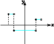
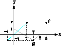

1/19- ضابطهء تابع در
دامنهء کدام
است؟
1)
2)
3)
4)
*دشوار* 39- اگر مجموعه جواب معادلهء بازهء باشد، کدام
است؟
1)
3 2)
4 3)
4)
49- نمودار
تابع در بازهء
از
چند پارهخط با طول مساوی تشکیل شده است؟
1)
2 2)
3 3)
4 4)
5
62- محیط
یک مستطیل، 10 برابر عرض آن است. کدام رابطهء ریاضی عرض مستطیل را برحسب مساحت آن (S) نشان میدهد؟
1)
2)
3)
4)
64- (حذف شود)
96- دامنهء
یک تابع و
برد آن عضو
دارد. برای n چند عدد طبیعی وجود دارد؟
1)
2 2)
3 3)
4 4)
5
100-
نمودار تابع داده
شده است. مقدار کدام
است؟
1)
7 2)
6 3)
5 4)
4
*قبل از کامنت* 1/103- تابع را 3
واحد در امتداد محور xها در جهت منفی و سپس در امتداد
محور yها
2 واحد در جهت منفی انتقال میدهیم. منحنی حاصل، محور xها را با کدام طول قطع میکند؟
1)
2)
3)
4)
114- اگر
دامنهء تابع به
صورت باشد، در این صورت مقدار b کدام میتواند باشد؟
1)
1 2)
2 3)
3 4)
4
115-
دامنهء تابع بازهء است.
کدام
است؟
1)
5 2)
3)
4)
1
1/121-
دامنهء تابع با ضابطهء کدام
است؟
1)
2)
3)
4)
134- اگر
شکل مقابل نمودار تابع باشد، دامنهء تابع کدام
است؟
1)
2)
3)
4)
137- (حذف شود)
143- اگر
دو تابع و مساوی باشند، مقدار k کدام است؟
1)
2)
3)
4)
*دشوار* 149- اگر دو تابع و برابر باشند، مقدار کدام
است؟
1)
2)
2 3)
4 4)
154-
دامنهء تابع خطی f بازهء و
برد آن بازهء است.
اگر شیب خط منفی باشد، مقدار کدام
است؟
1)
2)
3)
صفر 4)
1
161- در یک
تابع خطی داریم: و ، در این صورت کدام
است؟
1)
12 2)
20 3)
18 4)
24
162- حذف
166- اگر
تابع یک
تابع ثابت و تابع یک
تابع همانی باشد، آنگاه کدام
است؟
1)
2)
4 3)
4)
8
170- اگر f تابع همانی و نمودار پیکانی تابع g به صورت مقابل باشد، مقدار کدام
است؟
1)
6 2)
3)
12 4)
171- حذف
172- حذف
177- نمودار تابع f با ضابظهء از
نقطهء عبور
میکند. اگر باشد، کدام
است؟
1)
2)
5 3)
4)
3
181- مساحت
محصور بین نمودار تابع و
محور xها
کدام است؟
1)
11 2)
3)
15 4)
198- اگر
نمودار تابع گویای به
صورت مقابل باشد، مقدار کدام
است؟
1)
2)
2 3)
4)
1
1/198- با توجه به نمودار تابع f، برد تابع کدام
است؟ (مکان این تست بررسی شود)
1)
2)
3)
4)
216- با
اعمال موارد کدام گزینه به ترتیب، نمودار تابع تبدیل به نمودار تابع میشود؟
1)
انتقال 3 واحد به راست، قرینه نسبت به محور xها و yها، انقباض واحد
در راستای افقی
2)
انتقال 3 واحد به چپ، قرینه نسبت به محور xها و yها، انقباض واحد
در راستای عمودی
3)
انتقال 3 واحد به چپ، قرینه نسبت به محور xها و yها، انقباض واحد
در راستای افقی
4)
انتقال 3 واحد به راست، قرینه نسبت به محور xها و yها، انقباض واحد
در راستای عمودی
217-
نمودار تابع را
با ضریب انقباض افقی داده، سپس عرض نقاط تابع را نصف میکنیم،
پس از آن نمودار را یک واحد به پایین انتقال داده و در نهایت یک واحد به سمت راست
انتقال میدهیم، ضابطهء تابع حاصل کدام است؟
1)
2)
3)
4)
1/217- میخواهیم با استفاده از نمودار
تابع ، نمودار تابع را
رسم کنیم، به اشتباه ابتدا طول تمام نقاط f را 3 برابر کرده و سپس آنها را 6 واحد به
سمت چپ انتقال میدهیم، در آخر برای اصلاح اشتباه به وجود آمده نمودار تابع حاصل
را چند واحد به سمت چپ منتقل کنیم؟
1)
4 2)
8 3)
12 4)
18
219- نقطهء
روی
نمودار تابع و
نقطهء متناظر با آن یعنی روی
نمودار تابع قرار
دارد. کدام
است؟
1)
2)
3 3)
2 4)
4
227- (حذف شود)
1/222-
نمودار تابع به
ازای کدام
است؟
1)
2) 3)
4)

1/244-
نمودار تابع را
ابتدا به اندازهء در
امتداد محور xها
در جهت مثبت و سپس در
امتداد محور yها
در جهت منفی انتقال میدهیم. تعداد محل تقاطع نمودار حاصل با محور xها در
فاصلهء کدام
است؟
1)
صفر 2)
1 3)
2 4)
4
278- f و g دو تابع چندجملهای هستند. اگر و ، آنگاه کدام
است؟
1)
4 2)
6 3)
8 4)
10
282- اگر و باشند، نمودار تابع کدام
است؟
1)
 2) 3)
2) 3)
 4)
4)
286- هرگاه نمودار دو تابع f و g به صورت زیر باشد، نمودار تابع کدام
است؟
مؤلف
محترم لطفاً شکل گزینهها بررسی شود. 
1)
 2) 3)
4)
2) 3)
4)
290-
نمودار سهمی f و تابع خطی ، به شکل مقابل هستند. کدام
است؟
1)
2)
3)
4)
*دشوار* 1/290- اگر و ، برد تابع کدام
است؟ (مکان این تست بررسی شود)
1)
2)
3)
4)
294- با
توجه به نمودار توابع f و g، تابع به
ازای چند عدد صحیح تعریف شده است؟
1)
یک 2)
دو 3)
سه 4)
چهار
307- برای
دو تابع و اگر
داشته باشیم: ، حاصل کدام
است؟
1)
9 2)
8 3)
7 4)
6
360-
نمودار سهمی g و تابع خطی f به صورت مقابل است. حاصل کدام
است؟
1)
2)
3)
4)
*دشوار* 362- اگر f تابع خطی و و باشد، طول نقطهء برخودر نمودار تابع f با محور xها کدام است؟
1)
2)
1 3)
4)
399- با
توجه به نمودار تابع f، توابع و به
ترتیب چگونهاند؟

1)
نزولی ـ نزولی 2)
صعودی ـ نزولی 3)
نزولی ـ صعودی 4)
صعودی ـ صعودی
*دشوار* 402- نمودار تابع به
شکل روبهرو است. یکنوایی تابع چگونه است؟
1)
صعودی 2)
نزولی 3)
ابتدا صعودی، سپس نزولی 4) ابتدا
نزولی، سپس صعودی
425- اگر باشد، مقدار کدام
است؟
1)
2 2)
8 3)
6 4)
صفر
430- به
ازای چند مقدار m نمودار تابع وارون از
نقطهء میگذرد؟
1)
صفر 2)
یک 3)
دو 4)
سه
432- اگر و
نمودار به
شکل مقابل باشد، کدام
است؟
1)
2)
3)
4)
1/470- فرض
کنید M نقطهء تلاقی منحنی با
تابع وارون خود باشد. فاصلهء نقطهء M از مبدأ مختصات کدام است؟
1)
2) 3) 3 4)
483- اگر، انگاه دامنهء تعریف تابع کدام است؟
1) 2) 3) 4)
484- اگر و، آنگاه حاصل کدام است؟
1)
7 2)
9 3)
11 4)
13
491- اگر و، آنگاه حاصل کدام است؟
1)
صفر 2)
1 3)
2 4)
502- اگر
دامنهء تابع بازهء باشد، برد این تابع کدام
است؟
1) 2) 3) 4)
504- برد
تابع با دامنهء کدام است؟
1) 2) 3) 4)
1/520- فرض
کنید برد تابع باشد، مقدار کدام است؟
1) 2) 3) 4)
540-
قرینهء نمودار تابع را نسبت به خط رسم کرده و سپس نمودار
حاصل را 2 واحد در جهت مثبت محور xها و 3 واحد در جهت منفی محور yها انتقال
میدهیم و آن را مینامیم. مقدار کدام است؟
1)
3 2) 3) 4)
544- اگر
نمودار دو تابع f و g به صورت مقابل باشند، دامنهء تابع gof کدام است؟
1) 2) 3) 4)